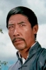

Also known as:Storming Attacks (original title)
Country:China, 91 minutes
Spoken languages:
Genres:Action
Director(s):Yang Chuan
Writer(s):Yang Chuan, Siu-kuen Wan
Video Codec:Unknown
Number: 1366


Certification:R
Storyline:
A band of counterfeiters wants to make Hong Kong their new territory. The disgraced leader of the Special Squad will have to team-up with a group of Hong Kong police officers in an attempt to stop the dirty business of crime lord Han Tin Lung, but Han's problem not only is the interference of the Police force, his Japanese ally Kimura is not happy with his 'cut' in the counterfeit deal and will try to put Donna (a relative of Han) on his side a make Han's business his own property. Both policemen and criminals are highly trained Martial Arts fighters and they will have the chance to prove who has the best Kung Fu techniques
Cast: 


Medium: Original DVD,
Comments: Part of: Bruce Lee / Brandon Lee Action Pack
Loaned: No
Aspect ratio: Unknown